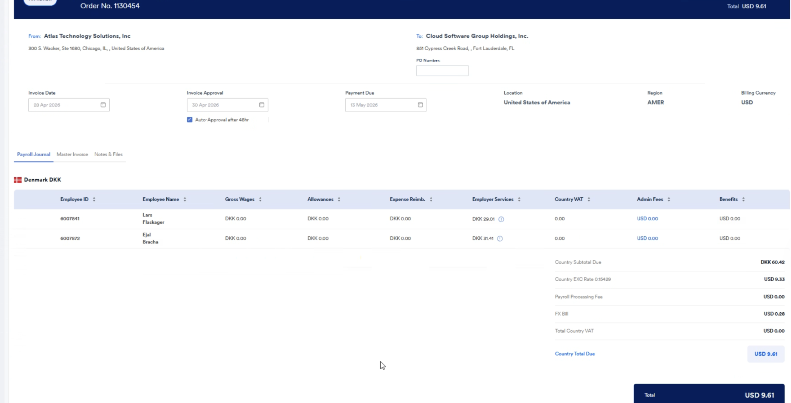
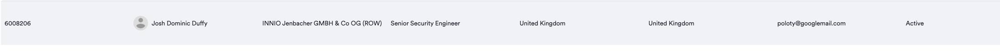

Process flows, automation steps, manual touchpoints, payment tracking, and handling questions from WSEs and clients.
Payroll OperationsClient Success
Version
1.0 — May 2026
First Go-Live
Finland — May 15, 2026
Countries in Scope
57 via Citi WorldLink
Owner
Payments & Platform Team
WL
Navigation
Table of Contents
1
What is WorldLink and Why It Matters
Context, before vs. after, and the value of automation
3
2
End-to-End Process Flow
Step-by-step: from G2N data to settled payment
4
3
What the System Does Automatically
Automation map — no human action required
6
4
Manual Review Steps — What You Do
Payroll Ops touchpoints, controls, and override actions
7
5
Payment Tracking — Status by Status
How to read the Payment Tracking tab from submission to settlement
8
6
Handling Data Errors and Flags
Hard blocks, soft warnings, and what to do
9
7
FAQ — Questions from WSEs
What workers typically ask about their payments
10
8
FAQ — Questions from Clients
What HR managers and client admins typically ask
11
9
Quick Reference Card
Contacts, escalation path, and key terms
12
Section 1
What is WorldLink and Why It Matters
The shift from manual, multi-intermediary payroll disbursement to direct, automated wire transfers via Citi.
Before WorldLink — T+5 days
1
Manual G2N export from LPP
2
Payroll Ops initiates transfer manually
3
Transfermate processes as intermediary
4
Citi receives and processes
5
Employee receives payment
→
With WorldLink — T+2 days
1
G2N auto-synced from Fabric to Atlas
2
Payroll Ops reviews and authorizes in Atlas
3
Direct Citi WorldLink wire — no intermediary
4
Employee receives payment
Before WorldLink
T+5
business days to settlement
Manual G2N extraction required
Transfermate adds 1–2 days
Email reconciliation with Citi
With WorldLink
T+2
business days to settlement
Auto-synced G2N from Fabric
Direct Citi wire — zero intermediary
Real-time tracking inside Atlas
⚠️Phase 1 scope (May 2026)
Phase 1 covers wire transfers in 57 countries via Citi WorldLink. Finland goes live May 15. SEPA (faster, lower cost for SEPA-zone countries) is Phase 2 and will follow later this year.

🖼️Save atlas-ss-1.png to Desktop to show screenshot
Atlas Payments — Country Funding tab. Batches across 57 countries with funding status, batch references, and totals.
Section 2
End-to-End Process Flow
From payroll close to employee payment — every step in sequence.
Fully automated — system handles this
Manual — Payroll Ops or Treasury action required
Review — system generates, human validates
1
G2N Data Sync — Fabric to AtlasAutomated
Gross-to-net payroll data is pushed from Fabric (LPP) into Atlas on every page refresh. WSE names, net pay amounts, bank details, and country are populated automatically.
No manual export or file upload needed
Data updates in real time as Fabric pushes changes
System detects new or changed records automatically
Rows locked and logged after confirmation — cannot be edited
4
Pre-flight Balance Check — System ValidatesAutomated
System queries the Citi treasury account balance and validates available funds ≥ total payroll × 1.10 (10% safety buffer). Alert fires if funds are short before any payment is sent.
Treasury reviews submitted payments in the Disburse Salaries tab and authorizes the batch. The system then generates the wire instruction and sends it to Citi WorldLink automatically.
6
Wire Sent to Citi WorldLinkAutomated
System sends the wire instruction to Citi WorldLink. Citi acknowledges receipt and begins processing. Status updates to "Wire Sent" → "Instruction Accepted" automatically.
7
Settlement — Employee Receives PaymentAutomated
Citi settles the wire in T+2 business days. Status updates to "Settled" in the Payment Tracking tab. No further action needed.
Section 3
What the System Does Automatically
No human action required for these steps — Atlas and Citi handle them end to end.
What the system does
How it works
What you see in Atlas
G2N data pull from Fabric
On page load, Atlas queries Fabric DB and populates the Review Payments table with current payroll data
Employee rows pre-filled with name, net pay, bank details, country
Data error detection
System checks each row for missing net pay, duplicate records, or invalid fields. Hard blocks flagged automatically
Red "Data Error" badge on affected rows; checkbox disabled
Anomaly detection
System flags rows where net pay is zero, or varies more than the configured threshold from prior run
Amber ⚠ icon next to net pay; acknowledgement checkbox appears
Supplementary payment detection
If Fabric pushes new data for an already-wired employee, system creates a supplementary row with "Unclassified" badge
"Supplementary" badge + classification dropdown on the new row
Treasury notification
On submission by Payroll Ops, system sends in-app and email notification to Treasury that a batch is ready
Treasury sees notification; rows appear in Disburse Salaries tab
Pre-flight balance check
Before authorization, system queries Citi for available balance and validates 10% buffer. Alert fires if funds are short
Balance check result shown in Disburse Salaries tab
Wire instruction generation
On Treasury authorization, system constructs and sends the wire payload to Citi WorldLink — no manual file upload
Status moves to "Wire Sent" automatically
Status polling from Citi
System continuously polls Citi for status updates and reflects them in Payment Tracking in real time
Status progresses: Submitted → Authorized → Wire Sent → Accepted → Settled
Audit logging
Every action (submit, authorize, classify) written to Payroll Edit Log with actor, timestamp, and details
Full audit trail visible in edit log — no manual recording needed
✅What this eliminates
Manual G2N export from LPP, sending payment files to Transfermate, tracking payment status via email with Citi, and manual reconciliation spreadsheets. The only human touchpoints are review and authorization.
Section 4
Manual Review Steps — What You Do
The steps where Payroll Ops and Treasury must take action. These are your control points.
⚠️Your role has shifted
You are no longer executing payments manually. You are the quality control layer — reviewing what the system has prepared, flagging exceptions, and authorizing the batch. The system cannot override your review or authorization.
Step 1 — Review employee rows in the Country Funding tabPayroll Ops
Open Payments → select country → review the table. Look for red badges, amber icons, and supplementary rows before submitting.
All rows with valid net pay are in Draft status and ready to select
Red "Data Error" rows cannot be submitted — resolve at source in Fabric/LPP first, then refresh
Amber warning rows require you to tick an acknowledgement checkbox before they can be included
Supplementary rows require a classification (Correction, Bonus, Supplementary Pay, Other) before submitting
Step 2 — Submit for DisbursementPayroll Ops
Select valid rows, click Submit for Disbursement, verify the confirmation bar, then confirm.
Double-check headcount and currency total in the confirmation bar before clicking Confirm
Once confirmed, rows are locked — cannot edit or recall without escalating to Treasury
Green success banner confirms submission and Treasury notification
Treasury reviews submitted payments, confirms the balance check passed, and authorizes the batch. This is the final human gate before the wire is sent.
Balance check result is shown — Treasury confirms funds are sufficient
Authorize / Execute Disbursement button triggers the wire instruction to Citi automatically
Treasury cannot authorize if the pre-flight balance check failed

🖼️Save atlas-ss-2.png to Desktop
Disburse Salaries tab — "Ready to Disburse" status. Treasury sees employee list with salary and payroll amounts before executing disbursement.
Section 5
Payment Tracking — Status by Status
How to read the Payment Tracking tab from submission through to settled.
Draft
Payroll Ops review
Submitted
Pending Treasury
Authorized
Treasury approved
Wire Sent
Sent to Citi
Accepted
Citi confirmed
Settled
Employee paid T+2
Status
Who sets it
What it means
What to do
Draft
System
G2N data received, row ready for Payroll Ops to review
Review for flags; select and submit
Submitted
Payroll Ops
Row submitted for Treasury review. Locked.
Nothing — wait for Treasury to authorize
Authorized
Treasury
Treasury approved the payment. System generating wire instruction.
Nothing — system takes over
Wire Sent
System
Wire instruction delivered to Citi WorldLink. Awaiting Citi acknowledgement.
Nothing — monitor status
Instruction Accepted
System (Citi)
Citi accepted and processing the wire. Settlement in T+2 business days.
Nothing — wire is in motion
Settled
System (Citi)
Funds received by employee's bank. Cycle complete.
No action. Record complete for audit.
Failed
System (Citi)
Citi rejected the wire — usually invalid IBAN, bank account, or AML check failure.
Review error reason → escalate to Payments team with wire reference
📍Settlement timing
T+2 = 2 business days after Citi accepts the wire instruction. Settlement does not happen on weekends or public holidays in the destination country. A wire sent Thursday typically settles Monday.
🖼️Save atlas-ss-4.png to Desktop
Settled tab — Australia batch marked "Complete" with activity log showing full timeline: Batch Created → Cross-Border Transfer → Local Disbursement → Salaries Credited.
Section 6
Handling Data Errors and Flags
The system surfaces three types of issues. Here is how to handle each one.
🔴Hard Block — Data Error
The system received invalid or missing data from Fabric. This row cannot be submitted until the source data is fixed.
Examples:
Net pay is null or missing
Duplicate record received for the same employee
Invalid bank account format / IBAN fails validation
What to do: Contact the Payroll data team or check LPP/Fabric for the specific employee. Once corrected, refresh the page — the row will update. Do NOT submit any workaround.
🟡Soft Warning — Anomalous Data
Data is technically valid but unusual. You CAN submit — but must manually acknowledge the row first.
Examples:
Net pay is zero — "please verify before submitting"
Net pay significantly higher than prior run — "net pay is 28% higher than previous run"
What to do: Read the tooltip on the amber icon. Verify the amount with the payroll data team or client. If correct, tick the acknowledgement checkbox. If incorrect, escalate to fix at source.
🔵Supplementary Payment
Fabric has pushed new data for an employee whose payment has already been authorized or wired. Treated as a new, separate payment — not a modification of the original.
What to do: Select a classification from the dropdown (Correction / Supplementary Pay / Bonus / Other). This unlocks the row for submission. The original payment is not affected.
Answers for workers/employees asking about their salary payment under the new system.
For WSEs / Employees
QWhen will I receive my salary?
Your salary is sent via international wire transfer and typically arrives within 2 business days of the payment being authorized. Business days exclude weekends and public holidays in your country. If your payment was authorized on a Thursday, you would typically receive it by the following Monday. This is faster than before — previously it could take up to 5 business days.
QHow do I know my payment has been sent?
Your Atlas portal will show your payment status. Once your payment moves to "Wire Sent" status, the instruction has been delivered to Citi. When it moves to "Settled," the funds have reached your bank. You may also see a pending transaction in your bank app before full settlement.
QMy payment hasn't arrived after 2 business days. What do I do?
Check that your bank account details on file with Atlas are correct — especially your IBAN and bank routing details. If correct and it's been more than 3 business days, contact your Atlas client success representative or HR admin. Have your employee ID and pay period ready. Do not contact Citi directly — all payment queries go through Atlas.
QWill the amount I receive change?
No. The amount is determined by your gross-to-net payroll calculation — the same process as before. The payment system change (from Transfermate to WorldLink) does not affect your net pay. Questions about your payroll calculation should go to your HR admin.
QWhat currency will I be paid in?
You will be paid in your local currency as agreed in your employment contract. The system handles any required currency conversion as part of the wire instruction. You do not need to do anything differently.
QIs my banking information secure?
Yes. Bank account details are stored encrypted within Atlas and are only used to generate the wire instruction to Citi. Atlas does not store or share your card details. To update your bank details, use your Atlas employee portal — changes take effect from the next payroll cycle.
QWhat if I see "Payment Failed" in my portal?
A failed payment is usually caused by an incorrect bank account number or IBAN. Check your bank details in the Atlas portal and contact your HR admin to correct them. Once corrected, the payment will be re-initiated in the next available cycle.
Section 8
FAQ — Questions from Clients
Answers for HR managers, client admins, and finance leads asking about the payment automation.
For Clients — HR Managers & Finance Leads
QWhat has changed in how Atlas processes payroll payments?
Atlas now processes payroll disbursements directly through Citi WorldLink, a global wire transfer network. Previously, payments went through Transfermate as an intermediary, adding cost and processing time. With WorldLink, the process is fully automated from payroll data to wire instruction — reducing settlement from T+5 to T+2 business days, and eliminating Transfermate fees entirely.
QDo we need to do anything differently on our end?
No changes are required on your side. Your payroll data submission process stays the same. The change is entirely in how Atlas processes and disburses payments after receiving your payroll data. Your employees will see faster payment times — that's the visible difference.
QHow much faster will my employees receive their salaries?
Settlement time improves from T+5 to T+2 business days — a reduction of 3 business days. T refers to the day the payment is authorized by Atlas Treasury. Employees will see funds arrive noticeably earlier compared to previous payroll cycles.
QWhich countries are covered?
Phase 1 covers 57 countries via Citi WorldLink wire transfers. Finland goes live May 15, 2026, with other countries following throughout May. SEPA payments for SEPA-zone countries are Phase 2 later this year — further reducing cost for European payments.
QWill the cost to us change?
You benefit from the removal of Transfermate as an intermediary. Transfermate fees were built into the cost of payment processing — eliminating them reduces per-payment cost. Your Atlas account team will confirm the specifics for your contract and countries.
QHow can I see the status of my employees' payments?
Payment status is tracked in real time inside the Atlas platform. Your HR admin or client contact at Atlas can pull a payment status report per cycle showing each employee's current stage, wire reference, and settlement date. Ask your Atlas client success rep to set this up.
QWhat happens if a payment fails for one of my employees?
Atlas detects failed payments automatically and flags them in the system. We will notify you within one business day of a failure, with the reason (typically an invalid bank account). We will work with you to correct the bank details and re-initiate payment in the next available cycle.
QWhy is Atlas using wire transfers instead of SEPA or faster rails?
Wire transfers via Citi WorldLink cover all 57 countries in scope — SEPA only applies to ~36 European countries. Starting with wires ensures every country goes live on the same model in May. SEPA is Phase 2 and will layer in for SEPA-zone countries to further optimize speed and cost.
Section 9
Quick Reference Card
Keep this page accessible during every payroll cycle.
Payroll Ops — Cycle Checklist
Open Payments → select country
Review all rows in Country Funding tab
Resolve or acknowledge any flags before submitting
Classify any supplementary rows
Confirm headcount and total before submitting
Notify Treasury if any critical data issues found
Monitor Payment Tracking tab after submission
Treasury — Authorization Checklist
Review submitted payments in Disburse Salaries tab
Confirm balance check passed (shown in tab)
Verify batch count and total matches expectation
Click Execute Disbursement to trigger wire instruction
Monitor Payment Tracking for Wire Sent confirmation
Flag any failed payments to Payments team immediately
Key Terms
G2N
Gross-to-Net payroll data from Fabric/LPP
WorldLink
Citi's global wire transfer network
T+2
2 business days after wire accepted by Citi
Hard Block
Data error — row cannot be submitted
Soft Warning
Anomaly — requires acknowledgement to proceed
Supplementary
New data pushed for an already-wired employee
Wire Reference
Citi's unique ID for each wire transaction
Client Success — Escalation Path
WSE not paid after T+3 → raise with Payroll Ops
Payment Failed → check bank details, notify client
Client asks for wire reference → request from Payments team
Settlement time question → T+2 from authorization date
Data error not resolving → escalate to Payroll Data team
SEPA / Phase 2 timeline → route to Product
Issue
First Contact
Escalation
SLA
Payment not received by WSE (T+3+)
Payroll Ops
Payments team + Citi wire reference
Same business day response
Payment Failed status in Atlas
Client Success → notify client
Payroll Ops to correct bank details
Within 1 business day
Data Error not resolving after Fabric fix
Payroll Ops → Payroll Data team
Engineering (Payments team)
Within 4 hours during payroll cycle
Balance check failed — insufficient funds
Treasury → Finance
CFO / Finance Ops
Immediate — blocks the cycle
📌Coming in Phase 2
SEPA payments for SEPA-zone countries · G2N reconciliation report per cycle · Rippling automated invoice generation on payroll close.